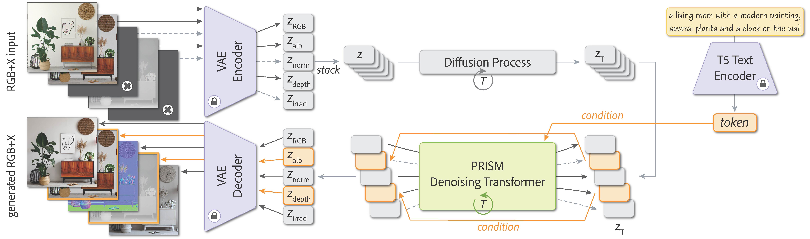
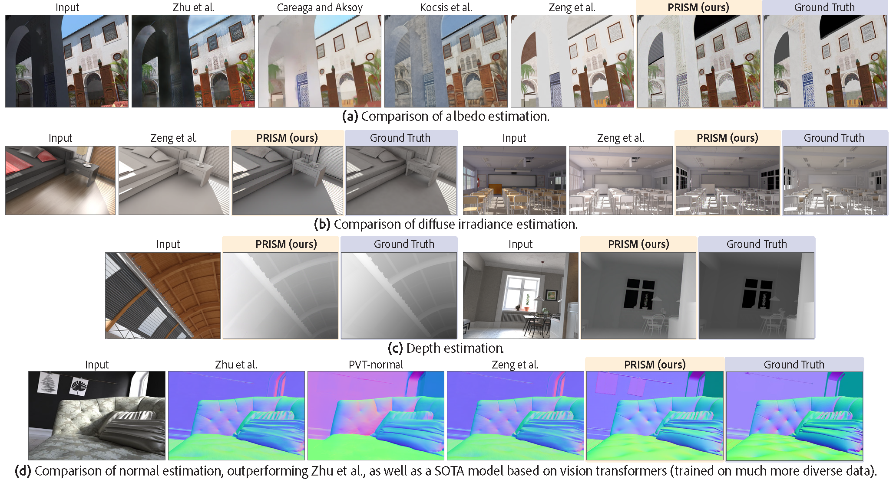
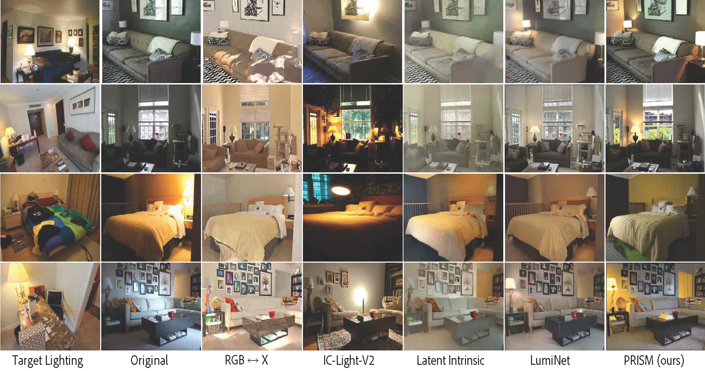

PRISM: A Unified Framework for Photorealistic Reconstruction and Intrinsic Scene Modeling
A unified model for intrinsic image generation and conditional generation
Anonymous submission for WACV 2026
Main Contributions
Abstract
Starting from a pre-trained text-to-image diffusion model, we present PRISM, a unified framework to produce RGB images along with its intrinsic maps (referred to as X layers) simultaneously.
Unlike previous approaches which infer intrinsic properties individually or require separate models for decomposition and conditional generation, PRISM combines the diverse tasks (text-to-RGBX generation, RGB-to-X decomposition, and X-to-RGBX conditional generation) in a unified model. This unified framework achieves remarkable consistency across the modalities.
Additionally, PRISM enables both global and local image editing by conditioning on selected intrinsic layers and text prompts. Extensive experiments demonstrate the competitive performance of PRISM both for intrinsic image decomposition and conditional image generation.
Method
Results
PRISM: A Unified Framework
PRISM supports multiple generation modes in a single unified model: text-to-RGBX generation, RGB-to-X decomposition, and X-to-RGBX conditional generation. Users can use any subset of text, RGB and X inputs to jointly generate RGBX images.This unified approach enables both local material editing and global relighting applications.
Overview of PRISM's operation modes and their applications
Text-to-RGBX Generation
PRISM can generate RGB images along with their intrinsic properties (albedo, normals, depth, irradiance) from text descriptions alone. This demonstrates the model's ability to understand scene composition and lighting from textual input.
Examples showing diverse text prompts generating consistent RGB and intrinsic representations
RGB-to-X Intrinsic Decomposition
Given only an RGB input image, PRISM decomposes it into intrinsic components including albedo, surface normals, depth, and irradiance. PRISM shows strong generalization capability to real-world images.
Qualitative Comparison
Comparison with state-of-the-art intrinsic decomposition methods
Intrinsic decomposition results on diverse indoor and outdoor scenes
Text-Guided Relighting
PRISM enables global relighting by first decomposing an input image, then using all intrinsic layers except irradiance along with a text prompt describing the desired lighting condition.

Comparison with State-of-the-Art
Comparison with RGB↔X, IC-Light-V2, Latent Intrinsic, and LumiNet on relighting tasks
Results showing lighting changes from "soft golden hour sunlight" to "eerie, dimly lit, haunting"
Local Material Editing
Using masked conditioning, PRISM can edit specific objects in a scene while preserving lighting consistency. The model takes a mask, text description of desired material properties, and generates realistic material changes.

Examples of material editing: changing chairs to reflective silver, adding colorful murals, ivory embossings, and classical paintings
3D Object Compositing
PRISM can composite 3D objects into background scenes with realistic lighting integration. The model uses decomposed intrinsic properties of both background and objects to achieve consistent lighting and shadows.

Comparison with state-of-the-art object compositing methods showing realistic integration